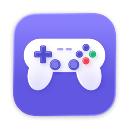
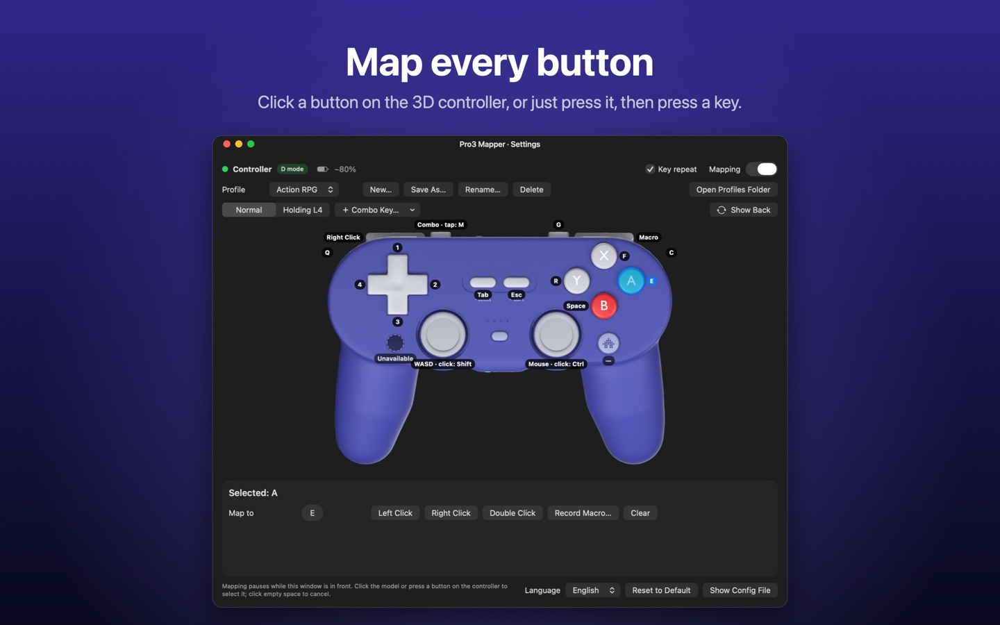

Pro3 Mapper
Gamepad to keys for your Mac

Support
Pro3 Mapper turns your game controller into keyboard and mouse input, so you can play games that don't support controllers. It's made for the controller with two back paddles (PL / PR), L4 / R4 buttons under the shoulders and an S / D / X mode switch on the back.
Please include your macOS version, the app version (select Pro3 Mapper in Finder's Applications folder and choose File › Get Info) and which mode switch position (S / D / X) you use.
Getting started
- Connect the controller over Bluetooth. D mode is recommended: every button works except Capture.
- Open Pro3 Mapper. Click Open System Settings… at the top of the settings window and turn Pro3 Mapper on under Privacy & Security › Accessibility.
- Click a button on the 3D model, or just press it on the controller, then press a keyboard key.
- Close the settings window. Mapping runs from the menu bar, where you can also turn it off or switch profiles.
Buttons don't send any keys
- Make sure Pro3 Mapper is turned on in System Settings › Privacy & Security › Accessibility. If it already is, quit and reopen the app.
- Mapping pauses while the settings window is in front. Close it or switch to your game.
- Check that Enable Mapping is ticked in the menu bar menu.
Some buttons say "Unavailable"
The controller reports different buttons in each mode:
- D mode (Bluetooth): everything except Capture. L4 / R4 / PL / PR are detected automatically.
- S mode: Capture and HOME work, but the controller doesn't report L4 / R4 / PL / PR.
- X mode: not recognized by macOS.
Mappings you set for unavailable buttons are kept and work again in a mode that has them.
HOME opens the Games overlay
macOS uses HOME for its Games overlay unless the app in front is allowed to use it. Go to System Settings › Game Controllers › Home Button Overrides › Edit… and add your game.
Where are my profiles?
Choose Open Profiles Folder from the menu bar menu. Each profile is a JSON file you can back up or copy to another Mac.
A game ignores the controller
Some games, often online games with anti-cheat, ignore simulated keyboard input or don't allow macros. Please follow the rules of the games you play.
技术支持
Pro3 手柄映射把游戏手柄的按键转成键盘和鼠标输入，让不支持手柄的游戏也能用手柄玩。它是专门为背面有 PL / PR 两个背键、肩键下面有 L4 / R4 小键、背面有 S / D / X 模式开关的那款手柄打造的。
请附上 macOS 版本、App 版本（在 Finder 的「应用程序」里选中本 App，选 文件 →「显示简介」），以及手柄模式开关拨在哪一档（S / D / X）。
开始使用
- 用蓝牙连接手柄。推荐 D 模式：除了截图键都能用。
- 打开 App，点设置窗口顶部的「打开系统设置…」，在 隐私与安全性 → 辅助功能 里打开本 App。
- 点一下 3D 模型上的键，或者直接按一下实体手柄上的键，再按键盘上的键。
- 关掉设置窗口，映射就在后台工作了。菜单栏里可以开关映射、切换键位方案。
按手柄没有反应
- 确认 系统设置 → 隐私与安全性 → 辅助功能 里已经打开本 App；已经打开的话，退出 App 再重新打开。
- 设置窗口在前台时映射会暂停，关掉它或者切到游戏。
- 确认菜单栏菜单里「启用映射」是勾上的。
有的键显示「不可用」
手柄在不同模式下上报的键不一样：
- D 模式（蓝牙）：除了截图键都能用，L4 / R4 / PL / PR 自动识别。
- S 模式：截图键、HOME 能用，但手柄不上报 L4 / R4 / PL / PR。
- X 模式：macOS 不认。
给不可用的键设的映射会保留，换到有这些键的模式后照常生效。
按 HOME 会打开「游戏」叠层
macOS 默认把 HOME 用来打开「游戏」叠层，除非前台的程序被允许使用它。到 系统设置 →「游戏控制器」→「主屏幕按钮覆盖」→「编辑…」，把你的游戏加进去。
键位方案存在哪里？
菜单栏菜单里选「打开方案文件夹」。每个方案是一个 JSON 文件，可以备份，也可以拷到另一台 Mac 上用。
游戏不认手柄的按键
有些游戏（多半是带反作弊的网络游戏）会忽略模拟的键盘输入，或者不允许使用宏。请遵守所玩游戏的规则。